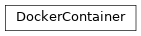
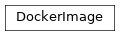

shepherd.docker¶
Classes¶
DockerContainer: Helper class for running and managing docker containers.DockerImage: Helper class for running and managing docker images.
-
class
shepherd.docker.DockerContainer(image, autoremove=True, runtime=None, env=None, bind_mounts=None, ports=None, command=None)[source]¶ Bases:
objectHelper class for running and managing docker containers.
-
__init__(image, autoremove=True, runtime=None, env=None, bind_mounts=None, ports=None, command=None)[source]¶ Initialize
DockerContainer.- Parameters
image (
DockerImage) – containerDockerImageautoremove (
bool) – remove the container after it is stoppedenv (
Optional[Dict[str,str]]) – additional environment variablesbind_mounts (
Optional[Dict[str,str]]) – optional host->container bind mounts mappingports (
Optional[Dict[int,int]]) – optional host->container port mappingcommand (
Optional[List[str]]) – optional docker container run command
-
kill()[source]¶ Kill the underlying docker container.
- Raises
DockerError – if the container was not started yet (i.e., its
container_idis not known)- Return type
None
-
property
running¶ Check if the underlying docker container is still up and running. Returns
Falseif the container was not even started.- Return type
- Returns
docker container running flag
-
-
class
shepherd.docker.DockerImage(name, tag, registry)[source]¶ Bases:
objectHelper class for running and managing docker images.
-
__init__(name, tag, registry)[source]¶ Initialize new
DockerImage.
-
_login()[source]¶ If the registry configuration contains a username, log-in to the registry.
- Return type
None
-
property
full_name¶ Return docker image full name including registry url. E.g.:
docker.iterait.com/my-image:latest.- Return type
-